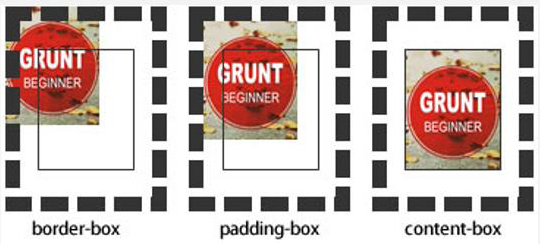
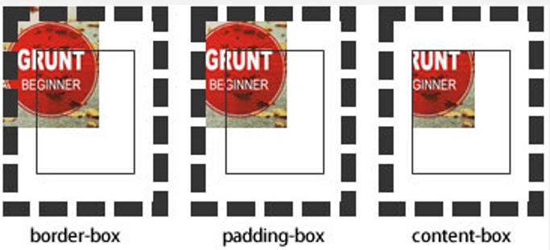

背景background
.bab{
width: 500px;
height: 500px;
/*overflow: auto; 超出部分以滚动条显示*/
/*background: skyblue;*/
/*background-image: linear-gradient(to right red,blue);*/
border: 5px solid black;
background-image: linear-gradient(88deg,red,blue);
/*背景图的平铺方式*/
/*background-repeat:no-repeat ;*/
/*background-repeat-x: no-repeat;*/
/*background-repeat-y: no-repeat;*/
/*背景图位置
background-position-x: left/center/right;
background-position-x: 100px; (以左上角为起点)
background-position-y: top/center/bottom;
background-position-y: 80%;
background-position: 50% 30%;
背景图尺寸 background-size: auto(默认图像的尺寸);*/
/*background-size: 100px;*/
/*固定值:按照固定值进行拉伸*/
/*background-size: 100%;*/
/*百分比:根据父容器的宽高,进行拉伸*/
/*background-size: contain;(以容器的最小为标准,保证图像完整显示)*/
/*background-size: cover;*/
/*cover 铺满,强制将图片铺满整个容器,无法显示整张图片*/
background-origin ： border-box | padding-box | content-box;

background-clip ： border-box | padding-box | content-box | text

}